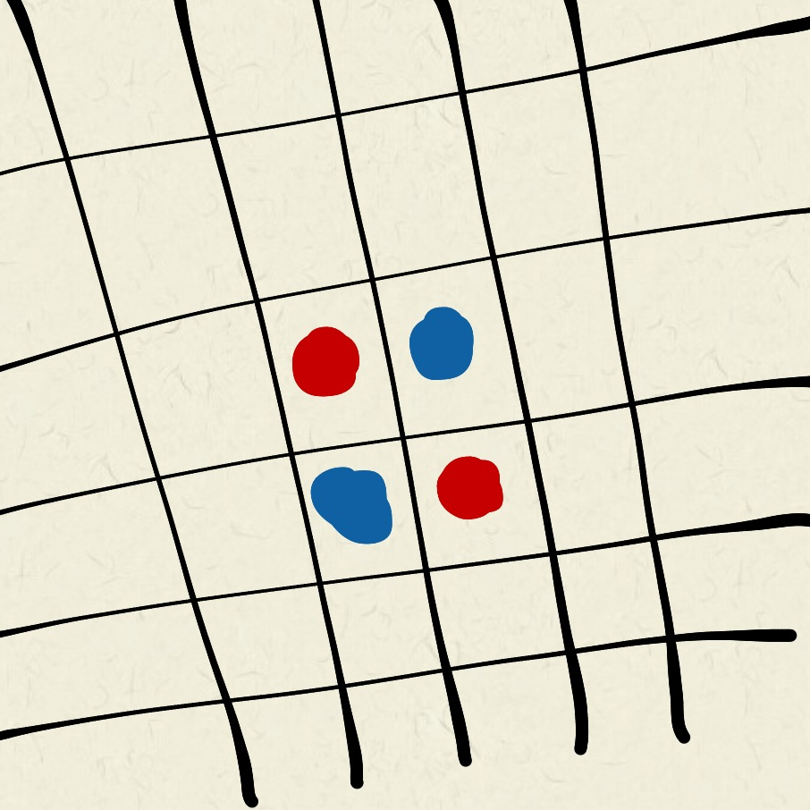
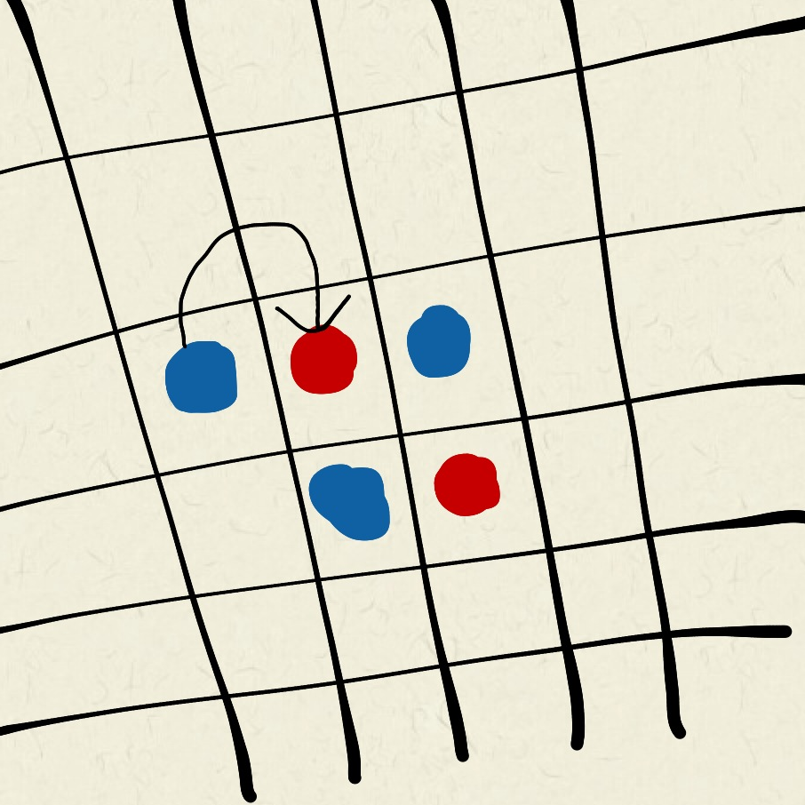

Playing Paritaire
Playing paritaire is simple enough to get you started in seconds, and yet complex enough to stay interesting, game after game! And you don't have to create an account! Below, we show you how to start, play and share a game.
Settings
To start a new game session, click the New button in the navigation bar. This will lead you to the set up page, where you can configure the following parameters:
Parameters
When you are satisfied with your choice, click the "Ready!" button. This will move you directly into the game.
Altough, if you have chosen online mode, you'll have to wait until an opponent joins your session.
To start a new game session, click the New button in the navigation bar. This will lead you to the set up page, where you can configure the following parameters:
Parameters
-
Field Size
The field size ist set to 8x8 by default, but you can choose a larger field if you want to.
A larger field will make the game more compley, but it will also take longer to finish. - Game Mode
-
Colors
You can choose one of these beautiful colors for you and your opponent.

When you are satisfied with your choice, click the "Ready!" button. This will move you directly into the game.
Altough, if you have chosen online mode, you'll have to wait until an opponent joins your session.
Paritaire is a game you might already know as reversi or othello:
Your main goal is to have more tokens than your opponent when the game ends.
 But how can I reach this goal?
But how can I reach this goal?
Every game starts with four crossed tokens.
Both players can place their tokens alternately by following these two rules:
When does the game end?
The game ends when there is no possibility left to place any token. The player that has most tokens at this point wins the game.


Every game starts with four crossed tokens.
Both players can place their tokens alternately by following these two rules:
- You can only place your tokens next to an opposing token (horizontally, vertically or diagonally).
- You can only put it there, if the new and one of your other tokens will flank
at least one opposing token in a straight line (horizontally, vertically or diagonally).
When does the game end?
The game ends when there is no possibility left to place any token. The player that has most tokens at this point wins the game.
When setting up a game, you can choose between different game modes.
At the moment, you can choose between online and local mode:
-
Online
<<<<<<< HEAD You can play via Internet on two devices. The only thing you have to do is share your game and wait for your opponent to join it.
See also how to share and how to join games. ======= Choose this mode, if you have and your opponent both want to use their own device (smartphone, tablet or computer).
After you have created a session, you have to wait until your opponent joins your session. Learn here how to join others sessions. >>>>>>> ef5be367df9053d2a1f8fe048d7d7dd89dcbb855 -
Local
Choose this mode, if you want to play on a single device. In local mode, you and your opponent should sit next to each other,
so that you both can place your tokens alterningly on the same screen.
<<<<<<< HEAD How can I start a game?
Settings
To start a new game session click the new button in the navigation bar to get to the set up options where you can set the different game parameters below.
When you finished your settings you can start the game by pressing the "Ready!" button which leads you to the play page. If you have chosen the local mode you can start the game immediatly, if you have chosen the online mode, you have to wait until your opponent joins the session.
Opponent
To invite a friend to play online with you, you can press the "Session Link" button to copy and send the Link. If you want to play with an unknown opponent press the "Publish" button to give your session a name and publish it an the main page.
Parameters
To start a new game session click the new button in the navigation bar to get to the set up options where you can set the different game parameters below.
When you finished your settings you can start the game by pressing the "Ready!" button which leads you to the play page. If you have chosen the local mode you can start the game immediatly, if you have chosen the online mode, you have to wait until your opponent joins the session.
Opponent
To invite a friend to play online with you, you can press the "Session Link" button to copy and send the Link. If you want to play with an unknown opponent press the "Publish" button to give your session a name and publish it an the main page.
Parameters
-
Field Size
The field size ist set to 8x8 by default which is a good size for each diplay size (screens, tablets and smartphones). - Game Mode
-
Colors
Before starting the players can choose a color they identify with during the game.